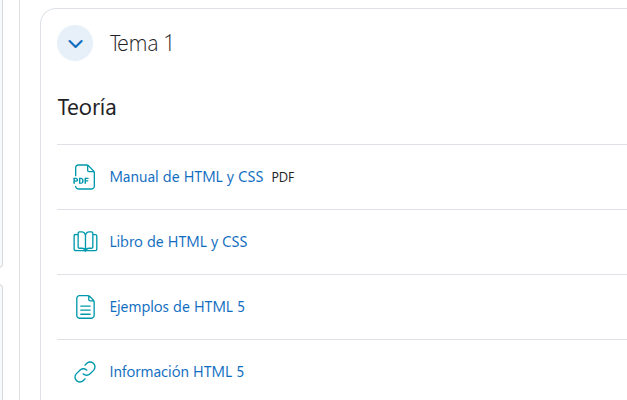
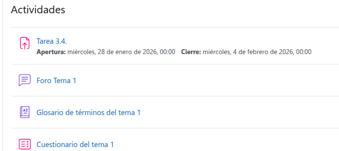
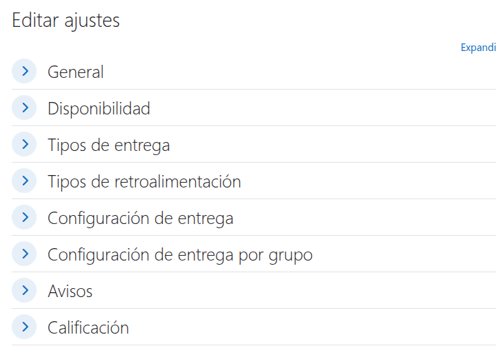

Tab 1
Tarea 3.4. Actividades y recursos ¶
| Unidad Didáctica | Unidad 3. Instalación, configuración y utilización de sistemas de gestión de aprendizaje a distancia | |
| Nombre de la Tarea | Tarea 3.4. Actividades y recursos | |
| Resultado de Aprendizaje (RA) | ||
| Criterios de Evaluación (CE) | ||
| Fecha Publicación/Entrega | Date | Date |
MÉTODO DE ENTREGA Y FORMATO ¶ |
||
| Documento |
|
|
1. DESCRIPCIÓN GENERAL. OBJETIVOS ¶
En esta actividad, el alumno deberá adquirir un dominio sobre los principales recursos y actividades que ofrece Moodle, aprendiendo a diferenciar su propósito, configuración y aplicación pedagógica dentro del diseño de un curso. El objetivo es que el alumno sea capaz de seleccionar y configurar las herramientas más adecuadas para ofrecer contenido y evaluar el progreso de los estudiantes de manera efectiva.
2. CONSIDERACIONES PREVIAS ¶
Partiendo de la plataforma Moodle instalada en la tarea 3.1. y en el curso creado anteriormente, se deben de realizar los siguientes pasos, se tendrán que ir realizando capturas de pantalla (OBLIGATORIO que se os identifique). Copiar los distintos apartados, las explicaciones de este documento y los enunciados, para luego contestar las preguntas e incluir las capturas solicitadas. Se entregará un documento PDF con los requisitos establecidos para este tipo de documentos.
3. CONTENIDO DE LA TAREA ¶
Exploración de Recursos Clave:
Activar el modo de edición y cambiar el título de una de las secciones (Tema 1)Cree dos Áreas de texto y medios, para separar secciones visualmente en el curso (Teoría y Actividades)
Suba un Archivo (ej. un PDF) y configure sus ajustes de apariencia para que se abra automáticamente en una ventana emergente.
Cree una página con algún contenido (se puede utilizar el contenido del documento PDF)
Cree dos enlaces a páginas con más información
Incluya una captura del curso con estos elementos recursos visibles.

Actividad de Evaluación y Entrega:
Cree una actividad de Tarea para la entrega de la documentación de la tarea actual (Tarea 3.4.).

Configure la Tarea para que acepte solo archivos PDF y establezca una fecha de entrega límite de 7 días (apartado Disponibilidad)

Se debe de poder entregar un solo archivo y texto en línea (Tipos de entrega)
Configure la retroalimentación con la opción de "Comentarios de retroalimentación" (apartado Tipos de retroalimentación).
Modificar la calificación para que la puntuación máxima sea 10 y la condición para aprobar 5. (Calificación)
Actividades de Interacción y Colaboración:
Cree un Foro de tipo "Para uso general" con la suscripción forzosa activada. Explique la diferencia con el tipo "Pregunta y Respuesta".
Cree un Glosario y configure la opción de "Enlace automático de entradas" para que Moodle reconozca automáticamente los términos del glosario en todo el curso.
Cree un cuestionario con varios tipos de preguntas. Configura el cuestionario de forma que tenga un tiempo límite de realización, las preguntas y respuestas aparezcan de forma aleatoria.
Preguntas de Reflexión y Diferenciación:
Explique la diferencia fundamental entre un Recurso (como una Carpeta) y una Actividad (como una Tarea) en Moodle, y cómo se relaciona con el seguimiento de la finalización del curso.
¿En qué situación pedagógica específica sería más apropiado utilizar el recurso Página en lugar del recurso Archivo para mostrar información a los estudiantes?
4. CRITERIOS DE CALIFICACIÓN ¶
⚠️ IMPORTANTE: El retraso en el plazo de entrega a través de la plataforma, la entrega del documento en formatos editables no permitidos (como .docx), capturas con identificación del alumno/a o la omisión de los enlaces de las fuentes documentales utilizadas penalizará gravemente la nota o invalidará la práctica.
| Apartado / Criterio | Muy Bien (100%) | Notable (75%) | Bien (50%) | Mejorable (30%) | Insuficiente (0%) | Peso |
|---|---|---|---|---|---|---|
| Contenido Técnico / Funcionalidad | Configuración completa y sin errores, demostrando la correcta implementación de la tarea. | Completo con errores menores/mínimos que no impiden el funcionamiento general de la plataforma. | Mayoría correcto, con algunos errores notables o partes que no funcionan, pero la base de la instalación es correcta. | Errores notables o faltan partes importantes de la instalación que impiden su funcionamiento. | No realizado o no cumple con los requisitos funcionales fundamentales. | 40% |
| Memoria y Documentación | Se incluyen todas las explicaciones, capturas solicitadas (identificadas claramente) y las respuestas a todas las preguntas de forma clara, concisa y completa, siguiendo la secuencia de pasos del documento. | Incluye la mayoría de las explicaciones, capturas y respuestas, siguiendo los pasos correctamente, con omisiones menores que no afectan la comprensión global de la tarea. | Pasos incompletos, faltan capturas importantes, o varias preguntas clave quedan sin responder/explicar. La documentación es insuficiente para el 40%. | Faltan partes importantes de la memoria, documentación pobre o la mayoría de preguntas/capturas/explicaciones están ausentes o son incorrectas. | No se entrega documentación, la información es inútil o no se ajusta a lo solicitado. | 50% |
| Presentación | Documento limpio, profesional y creativo. Sigue el formato (PDF) y cumple rigurosamente con todas las indicaciones de identificación. | Documento limpio, sigue el formato (PDF) y cumple las indicaciones de identificación solicitadas. | Desorganizado o sin formato adecuado (ej. no es PDF o le falta formato básico). | Desorganizado y difícil de leer. | Muy pobre o no trabajada. | 10% |